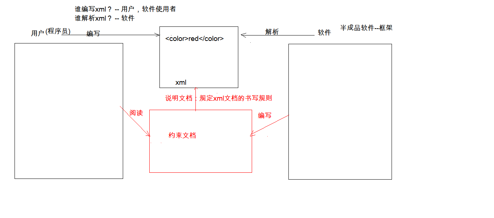

一、JDBC
- 概念：Java语言操作数据库
- 本质：其实是官方定义的一套操作所有关系型数据库的规则，即接口。各个数据库厂商去实现这套接口，提供数据库驱动jar包，我们可以使用这套接口（JDBC）编程，真正执行的代码是驱动jar包中的实现类
- 驱动：各个数据库厂商提供的规范的实现类

- 快速入门
- 步骤：
- 导入驱动jar包
- 复制mysql-connector-java-5.1.37-bin.jar到项目的libs目录下
- 右键-->Add As Library
- 注册驱动
- class.forName("com.mysql.jdbc.Driver");--注册一次驱动，一般使用这种方式
- DriverManager.registerDriver(new Driver());--会注册两次驱动
- 获取数据库连接对象Connection
- 定义sql
- 获取执行sql语句的对象Statement
- 执行sql，接收返回结果
- 处理结果
- 释放资源
public static void main(String[] args) throws Exception{
Class.forName("com.mysql.jdbc.Driver");
Connection conn = DriverManager.getConnection("jdbc:mysql://localhost:3306/db10","root","root");
String sql = "update account set balance = 500 where id = 1";
Statement stmt = conn.createStatement();
int count = stmt.executeUpdate(sql);
System.out.println(count);
stmt.close();
conn.close();
}
- 详解各个对象
- DriverManager：驱动管理对象
- 功能：
- 注册驱动：告诉程序该使用哪一个数据库驱动jar
- static void registerDriver(Driver driver) :注册与给定的驱动程序 DriverManager。
- 注意：mysql5之后的驱动jar包可以省略注册驱动的步骤。
- 获取数据库连接
- 方法：static Connection getConnection(String url, String user, String password)
- 参数：
- url：指定连接的路径
- 例子：jdbc:mysql://localhost:3306/db3
- 细节：如果连接的是本机mysql服务器，并且mysql服务默认端口是3306，则url可以简写为：jdbc:mysql:///数据库名称
- user：用户名
- password：密码
- Connection：数据库连接对象
- 功能：
- 获取执行sql 的对象
- Statement createStatement()
- PreparedStatement prepareStatement(String sql)
- 管理事务：
- 开启事务：setAutoCommit(boolean autoCommit) ：调用该方法设置参数为false，即开启事务
- 提交事务：commit()
- 回滚事务：rollback()
- Statement：执行sql的对象
- boolean execute(String sql) ：可以执行任意的sql （了解）
- int executeUpdate(String sql) ：
- 执行DML（insert、update、delete）语句、DDL(create，alter、drop)语句
- 返回值：影响的行数，可以通过这个影响的行数判断DML语句是否执行成功 返回值>0的则执行成功，反之，则失败。
- ResultSet executeQuery(String sql) ：执行DQL（select)语句
- ResultSet：结果集对象
- boolean next(): 游标向下移动一行，判断当前行是否是最后一行末尾(是否有数据)，如果是，则返回false，如果不是则返回true
- getXxx(参数):获取数据
- Xxx：代表数据类型 如： int getInt() , String getString()
- 参数：
- int：代表列的编号,从1开始 如： getString(1)
- String：代表列名称。 如： getDouble("balance")
- 注意：
- 使用步骤：
- 游标向下移动一行
- 判断是否有数据
- 获取数据
- PreparedStatement：执行sql对象
- SQL注入问题：在拼接sql时，有一些sql的特殊关键字参与字符串的拼接。会造成安全性问题
- 解决sql注入问题：使用PreparedStatement对象来解决
- 预编译的SQL：参数使用?作为占位符
- 步骤：
- 导入驱动jar包 mysql-connector-java-5.1.37-bin.jar
- 注册驱动
- 获取数据库连接对象 Connection
- 定义sql
- 注意：sql的参数使用？作为占位符。 如：select * from user where username = ? and password = ?;
- 获取执行sql语句的对象 PreparedStatement Connection.prepareStatement(String sql)
- 给？赋值：
- 方法： setXxx(参数1,参数2)
- 参数1：？的位置编号 从1 开始
- 参数2：？的值
- 执行sql，接受返回结果，不需要传递sql语句
- 处理结果
- 释放资源
- 注意：后期都会使用PreparedStatement来完成增删改查的所有操作
- 可以防止SQL注入
- 效率更高
public boolean login(String username,String password){
if(username == null || password == null){
return false;
}
Connection conn = null;
PreparedStatement pstmt = null;
ResultSet rs = null;
try {
conn = JDBCUtil.getConnection();
String sql = "select * from user where name = ? and password = ?";
pstmt = conn.prepareStatement(sql);
pstmt.setString(1,username);
pstmt.setString(2,password);
rs = pstmt.executeQuery();
return rs.next();
} catch (SQLException e) {
e.printStackTrace();
}
JDBCUtil.close(rs,conn,pstmt);
return false;
}
二、JDBC工具类（JDBCUtils）
代码实现：
public class JDBCUtil {
private static String url;
private static String user;
private static String password;
private static String driver;
static {
try {
Properties pro = new Properties();
ClassLoader classLoader = JDBCUtil.class.getClassLoader();
URL res = classLoader.getResource("jdbc.properties");
String path = res.getPath();
System.out.println(path);
pro.load(new FileReader(path));
url = pro.getProperty("url");
user = pro.getProperty("user");
password = pro.getProperty("password");
driver = pro.getProperty("driver");
Class.forName(driver);
}catch (IOException e){
e.printStackTrace();
}catch (ClassNotFoundException e){
e.printStackTrace();
}
}
public static Connection getConnection() throws SQLException {
return DriverManager.getConnection(url,user,password);
}
public static void close(ResultSet rs,Connection conn, Statement stmt){
if(rs != null){
try {
rs.close();
} catch (SQLException e) {
e.printStackTrace();
}
}
if(conn != null){
try {
conn.close();
} catch (SQLException e) {
e.printStackTrace();
}
}
if(stmt != null){
try {
stmt.close();
} catch (SQLException e) {
e.printStackTrace();
}
}
}
public static void close(Connection conn, Statement stmt){
if(conn != null){
try {
conn.close();
} catch (SQLException e) {
e.printStackTrace();
}
}
if(stmt != null){
try {
stmt.close();
} catch (SQLException e) {
e.printStackTrace();
}
}
}
}
三、JDBC控制事务
- 事务：一个包含多个步骤的业务操作。如果这个业务操作被事务管理，则这多个步骤要么同时成功，要么同时失败。
- 操作：
- 开启事务
- 提交事务
- 回滚事务
- 使用Connection对象来管理事务
- 开启事务：setAutoCommit(boolean autoCommit) ：调用该方法设置参数为false，即开启事务
- 在执行sql之前开启事务
- 提交事务：commit()
- 当所有sql都执行完提交事务
- 回滚事务：rollback()
- 在catch中回滚事务
四、数据库连接池
- 概念：其实就是一个容器(集合)，存放数据库连接的容器。
- 当系统初始化好后，容器被创建，容器中会申请一些连接对象，当用户来访问数据库时，从容器中获取连接对象，用户访问完之后，会将连接对象归还给容器。
- 好处：
- 节约资源
- 用户访问高效
- 实现：
- 标准接口：DataSource javax.sql包下的
- 方法：
- 获取连接：getConnection()
- 归还连接：如果连接对象connection是从连接池中获取，那么调用Connection.close()方法则不会关闭连接，而是归还连接
- 一般不去实现它，由数据库厂商来实现
- C3P0:数据库连接池技术
- Druid:数据库连接池实现技术，由阿里巴巴提供
- C3P0:数据库连接池技术
- 步骤：
- 导入jar包(两个) c3p0-0.9.5.2.jar mchange-commons-java-0.2.12.jar
- 不要忘记导入数据库驱动jar包
- 定义配置文件：
- 名称： c3p0.properties 或者 c3p0-config.xml
- 路径：直接将文件放在src目录下即可。
- 创建核心对象 数据库连接池对象 ComboPooledDataSource
- DataSource ds = new ComboPooledDataSource();
- 获取连接： getConnection
- Connection conn = ds.getConnection();
- Druid：数据库连接池实现技术，由阿里巴巴提供的
- 步骤：
- 导入jar包 druid-1.0.9.jar
- 定义配置文件：
- 是properties形式的
- 可以叫任意名称，可以放在任意目录下
- 加载配置文件。Properties
- Properties pro = new Properties();
- InputStream is = DruidDemo.class.getClassLoader().getResourceAsStream("druid.properties");
- pro.load(is);
- 获取数据库连接池对象：通过工厂类来获取 DruidDataSourceFactory
- DataSource ds = DruidDataSourceFactory.createDataSource(pro);
- 获取连接：getConnection
- Connection conn = ds.getConnection();
总结：c3p0和druid的区别是，c3p0会把配置文件加载好，只需要new就能直接创建连接池对象，druid需要自己加载配置文件
- 定义工具类
public class JDBCUtil {
private static DataSource ds;
static{
try {
Properties pro = new Properties();
pro.load(JDBCUtil.class.getClassLoader().getResourceAsStream("druid.properties"));
ds = DruidDataSourceFactory.createDataSource(pro);
} catch (IOException e) {
e.printStackTrace();
} catch (Exception e) {
e.printStackTrace();
}
}
public static Connection getConnection() throws SQLException {
return ds.getConnection();
}
public static DataSource getDataSource(){
return ds;
}
public static void close(ResultSet rs, Statement stmt, Connection conn){
if(rs != null){
try {
rs.close();
} catch (SQLException e) {
e.printStackTrace();
}
}
if(stmt != null){
try {
stmt.close();
} catch (SQLException e) {
e.printStackTrace();
}
}
if(conn != null){
try {
conn.close();
} catch (SQLException e) {
e.printStackTrace();
}
}
}
public static void close(Statement stmt,Connection conn){
close(null,stmt,conn);
}
}
五、Spring JDBC
- Spring框架对JDBC的简单封装。提供了一个JDBCTemplate对象简化JDBC的开发
- 步骤：
- 导入jar包
- 创建JdbcTemplate对象。依赖于数据源DataSource
- JdbcTemplate template = new JdbcTemplate(DataSource ds);
- 调用JdbcTemplate的方法来完成CRUD的操作
- update():执行DML语句。增、删、改语句
- queryForMap():查询结果将结果集封装为map集合，将列名作为key，将值作为value 将这条记录封装为一个map集合
- 注意：这个方法查询的结果集长度只能是1
- queryForList():查询结果将结果集封装为list集合
- 注意：将每一条记录封装为一个Map集合，再将Map集合装载到List集合中
- query():查询结果，将结果封装为JavaBean对象
- query的参数：RowMapper
- 一般我们使用BeanPropertyRowMapper实现类。可以完成数据到JavaBean的自动封装
- new BeanPropertyRowMapper<类型>(类型.class)
- queryForObject：查询结果，将结果封装为对象
- 一般用于聚合函数的查询
jar包的问题:
mysql驱动:
mysql-connector-java-5.1.37-bin.jar
c3p0:
c3p0-0.9.5.2.jar
mchange-commons-java-0.2.12.jar
druid:
druid-1.0.9.jar
jdbcTemplate:
spring-beans-5.0.0.RELEASE.jar
spring-core-5.0.0.RELEASE.jar
spring-jdbc-5.0.0.RELEASE.jar
spring-tx-5.0.0.RELEASE.jar
commons-logging-1.2.jar
需求:
需要使用druid + jdbctemplate技术进行jdbc的开发:
mysql-connector-java-5.1.37-bin.jar
druid-1.0.9.jar
spring-beans-5.0.0.RELEASE.jar
spring-core-5.0.0.RELEASE.jar
spring-jdbc-5.0.0.RELEASE.jar
spring-tx-5.0.0.RELEASE.jar
commons-logging-1.2.jar
六.web概述
- 软件架构：
- . C/S: Client/Server 客户端/服务器端
- 在用户本地有一个客户端程序，在远程有一个服务器端程序
- 如：QQ，迅雷...
- 优点：用户体验好
- 缺点：开发、安装，部署，维护 麻烦
- B/S: Browser/Server 浏览器/服务器端
- 只需要一个浏览器，用户通过不同的网址(URL)，客户访问不同的服务器端程序
- 优点：
- 开发、安装，部署，维护 简单
- 缺点：
- 如果应用过大，用户的体验可能会受到影响
- 对硬件要求过高
- B/S架构详解
- 资源分类：
- 使用静态网页开发技术发布的资源。
- 特点：
- 所有用户访问，得到的结果是一样的。
- 如：文本，图片，音频、视频, HTML,CSS,JavaScript
- 如果用户请求的是静态资源，那么服务器会直接将静态资源发送给浏览器。浏览器中内置了静态资源的解析引擎，可以展示静态资源
- 动态资源：
- 使用动态网页及时发布的资源。
- 特点：
- 所有用户访问，得到的结果可能不一样。
- 如：jsp/servlet,php,asp...
- 如果用户请求的是动态资源，那么服务器会执行动态资源，转换为静态资源，再发送给浏览器
七、前端
- HTML
- 概念：是最基础的网页开发语言
- Hyper Text Markup Language 超文本标记语言
- 超文本:
- 超文本是用超链接的方法，将各种不同空间的文字信息组织在一起的网状文本.
- 标记语言:
- 由标签构成的语言。<标签名称> 如 html，xml
- 标记语言不是编程语言
- JavaScript：
- 其他类型转boolean值
- 0或NaN为假，非0为真
- 除了空字符串，都是true
- null和undefined都是false
- 所有对象都是true
- 变量用var声明
- 用：定义的变量是局部变量
- 不用：定义的变量是去全局变量
- 正则表达式
- {m,n}，m<=出现数量<=n
- {,n}最多n次
- {m,}最少m次
- Global
- 特点：全局对象，这个Global中封装的方法不需要对象就可以直接调用。 方法名();
- 方法：
- encodeURI():url编码
- decodeURI():url解码
- encodeURIComponent():url编码,编码的字符更多
- decodeURIComponent():url解码
- parseInt():将字符串转为数字
- 逐一判断每一个字符是否是数字，直到不是数字为止，将前边数字部分转为number
- isNaN():判断一个值是否是NaN
- NaN六亲不认，连自己都不认。NaN参与的==比较全部问false
- eval():将 JavaScript 字符串，并把它作为脚本代码来执行。
- URL编码
- 传智播客 = %E4%BC%A0%E6%99%BA%E6%92%AD%E5%AE%A2
- 事件绑定放肆
- 事件句柄绑定方式
- DOM对象方式
- BOM对象：
- 概念：Browser Object Model 浏览器对象模型，将浏览器的各个组成部分封装成对象。
- 组成：
- Window：窗口对象
- Navigator：浏览器对象
- Screen：显示器屏幕对象
- History：历史记录对象
- Location：地址栏对象
- Window：窗口对象
- 方法
- 与弹出框有关的方法：
- alert() 显示带有一段消息和一个确认按钮的警告框。
- confirm() 显示带有一段消息以及确认按钮和取消按钮的对话框
- 如果用户点击确定按钮，则方法返回true
- 如果用户点击取消按钮，则方法返回false
- prompt() 显示可提示用户输入的对话框。
- 返回值：获取用户输入的值
- 与打开关闭有关的方法
- close() 关闭浏览器窗口。
- 谁调用我 ，我关谁
- open() 打开一个新的浏览器窗口
- 返回新的Window对象
- 与定时器有关的方式
- 属性：
- 获取其它BOM对象
- history
- location
- Navigator
- Screen
- 获取DOM对象
- document
- Location:地址栏对象
- 创建（获取）：
- window.location
- location
- 方法：
- reload()重新加载当前文档
- 属性：
- href设置或返回完整的URL
- History：历史记录对象
- 创建
- window.history
- history
- 方法：
- back()：加载history列表中的第一个URL
- forward()：加载history列表中的下一个URL
- go(参数)：加载history列表中的某个具体页面。
- 参数：
- 正数：前进几个历史记录
- 负数：后退几个历史记录
- 属性：length返回当前窗口历史列表中的URL数量。
- 超链接点击阻止页面跳转
- href = "javascript:void(0);"
- this指的就是当前标签
- 提前定义好类的样式，通过className来设置样式的属性值
- 事件
选择和改变
1. onchange 域的内容被改变。
2. onselect 文本被选中
表单事件：
1. onsubmit 确认按钮被点击。（返回false会阻止表单提交）
2. onreset 重置按钮被点击。
八、bootstrap
- 定义容器
- container:占指定的视口宽度，两边留白（固定宽度）
- container-fluid:占满整个视口宽度（100%）
- 定义行：row
- 注意：
- 如果超过12，则超出部分自动换行
- 栅格类属性可以向上兼容。栅格类适用于与屏幕宽度大于或等于分界点大小的设备。
- 如果真实设备宽度小于了设置栅格类属性的设备代码的最小值，会一个元素沾满一整行。
- 列偏移：col-md-offset-3(偏移3个单位)
- class="img-responsive（图片自适应）
九、xml
- 概念：可扩展标记语言
- 可扩展：标签都是自定义的
- 功能
- 存储数据
- 配置文件
- 在网络中传输
- 与HTML的区别
- xml标签都是自定义的，HTML标签是预定义
- xml的语法严格，HTML语法松散
- xml是存储数据的，HTML是展示数据的
- 语法：
- 基本语法：
- xml文档的后缀名.xml
- xml第一行必须定义为文档声明
- xml文档中有且仅有一个根标签
- 属性值必须使用引号引起来
- 标签必须正确关闭
- xml标签名称区分大小写
- 组成部分
- 文档声明
- 格式：<?xml 属性列表 ?>
- 属性列表
- version:版本号，必须的属性
- encoding:编码方式，告知解析引擎当前文档使用的字符集编码方式，默认值：ISO-8859-1
- standalone:是否独立
- 取值：
- yes：不依赖其他文件
- no：依赖其他文件
- 指令（结合css的）
- <?xml-stylesheet type='text/css' href='a.css' ?>
- 标签：标签名称自定义的
- 规则：
- 名称可以包含字母、数字以及其他的字符
- 名称不能以数字或者标点符号开始
- 名称不能以字母 xml（或者 XML、Xml 等等）开始
- 名称不能包含空格
- 属性：id属性值唯一
- 文本：
- CDATA区：在该区域中的数据会被原样展示
- 格式：<![CDATA[ 数据 ]]>
- 约束：规定xml文档的书写规则
- 
- 作为框架使用者
- 能够在xml中引入约束文档
- 能够简单的读懂约束文档
- 分类
- DTD：一种简单的约束技术
- 引入dtd文档到xml文档中
- 内部dtd：将约束规则定义在xml文档中
- 外部dtd：将约束的规则定义在外部的dtd文件中
- 本地：<!DOCTYPE 根标签名 SYSTEM "dtd文件的位置">
- 网络：<!DOCTYPE 根标签名 PUBLIC "dtd文件名字" "dtd文件的位置URL">
- Schema：一种复杂的约束技术
- 引入：
- 填写xml文档的根元素
- 引入xsi前缀. xmlns:xsi="http://www.w3.org/2001/XMLSchema-instance"
- 引入xsd文件命名空间. xsi:schemaLocation="http://www.itcast.cn/xml student.xsd"
- 为每一个xsd约束声明一个前缀,作为标识 xmlns="http://www.itcast.cn/xml"
- 解析：操作xml文档，将文档中的数据读取到内存中
- 操作xml文档
- 解析（读取）：将文档中的数据读取到内存中
- 写入：将内存中的数据保存到xml文档中，持久化的存储
- 解析xml的方式
- DOM：将标记语言文档一次性加载进内存，在内存中形成一颗dom树
- 优点：操作方便，可以对文档进行CRUD的所有操作
- 缺点：占内存
- SAX：逐行读取，基于事件驱动的。
- 优点：不占内存。
- 缺点：只能读取，不能增删改
- xml常见的解析器
- JAXP：sun公司提供的解析器，支持dom和sax两种思想
- DOM4J：一款非常优秀的解析器（支持DOM和SAX）
- Jsoup：jsoup 是一款Java 的HTML解析器，可直接解析某个URL地址、HTML文本内容。它提供了一套非常省力的API，可通过DOM，CSS以及类似于jQuery的操作方法来取出和操作数据。
- PULL：Android操作系统内置的解析器，sax方式的。
- Jsoup：jsoup 是一款Java 的HTML解析器，可直接解析某个URL地址、HTML文本内容。它提供了一套非常省力的API，可通过DOM，CSS以及类似于jQuery的操作方法来取出和操作数据。
- 快速入门
- 导入jar包
- 获取Document对象
- 获取对应的标签Element对象
- 获取数据
- Jsoup：工具类，可以解析html或xml文档，返回Document
- parse：解析html或xml文档，返回Document
- parse(File in, String charsetName)：解析xml或html文件的。
- parse(String html)：解析xml或html字符串
- parse(URL url, int timeoutMillis)：通过网络路径获取指定的html或xml的文档对象
- Document：文档对象。代表内存中的dom树
- 获取Element对象
- getElementById(String id)：根据id属性值获取唯一的element对象
- getElementsByTag(String tagName)：根据标签名称获取元素对象集合
- getElementsByAttribute(String key)：根据属性名称获取元素对象集合
- getElementsByAttributeValue(String key, String value)：根据对应的属性名和属性值获取元素对象集合
- Elements：元素Element对象的集合。可以当做 ArrayList<Element>来使用
- Element：元素对象
- 获取子元素对象
- getElementById(String id)：根据id属性值获取唯一的element对象
- getElementsByTag(String tagName)：根据标签名称获取元素对象集合
- getElementsByAttribute(String key)：根据属性名称获取元素对象集合
- getElementsByAttributeValue(String key, String value)：根据对应的属性名和属性值获取元素对象集合
- 获取属性值
- String attr(String key)：根据属性名称获取属性值
- 获取文本内容
- String text():获取文本内容
- String html():获取标签体的所有内容(包括子标签的字符串内容)
- 快捷查询方式：
- selector:选择器
- 使用的方法：Elements select(String cssQuery)
- 语法：参考Selector类中定义的语法
- 示例：Elements elements2 = document.select("#person_3");
- XPath：XPath即为XML路径语言，它是一种用来确定XML（标准通用标记语言的子集）文档中某部分位置的语言
- 使用Jsoup的Xpath需要额外导入jar包。
- 查询w3cshool参考手册，使用xpath的语法完成查询
- 示例：List<JXNode> jxNodes = jx.selN("//person[@id='person_2']");